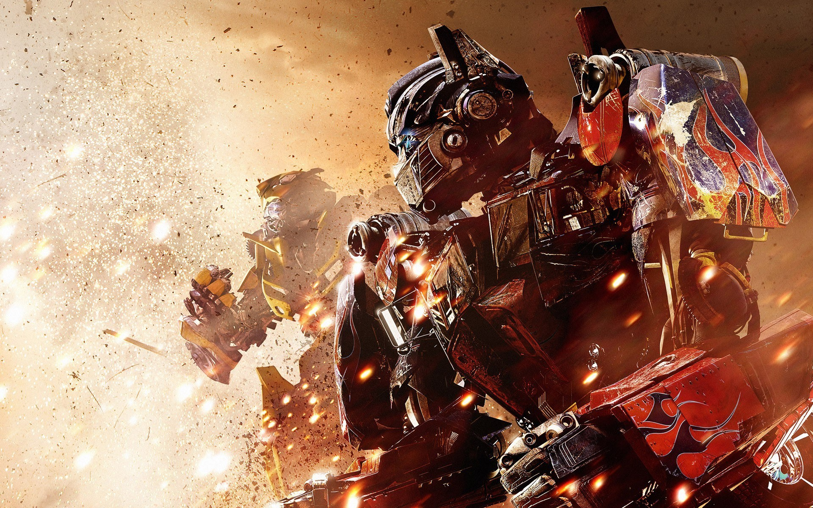
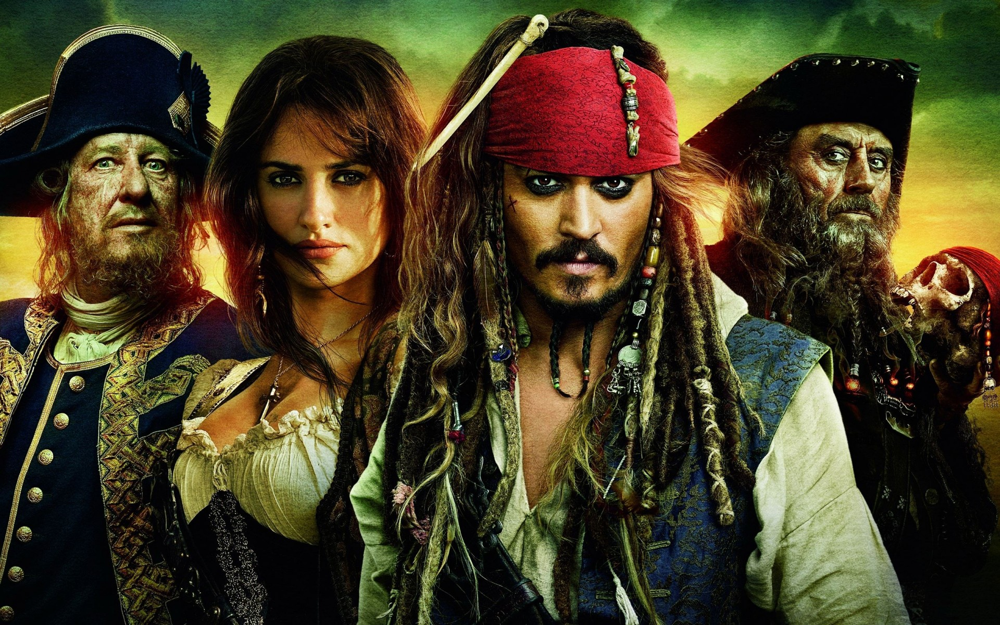
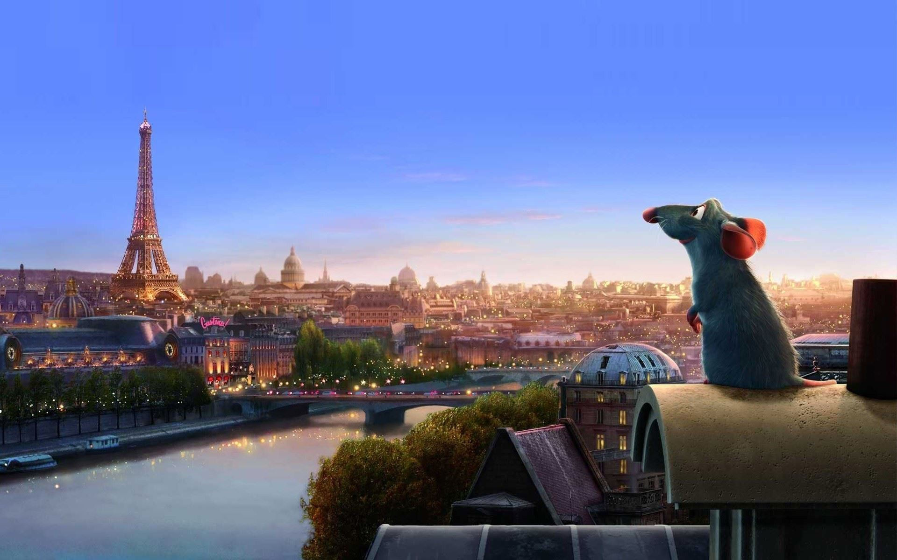

La oscuridad ha caído sobre Brooklyn, el Bronx y toda la ciudad de Nueva York cuando Destructor y su malvado Foot Clan se hacen con el control de todo, desde la policía hasta los políticos. El futuro es sombrío para la gran ciudad.... Hasta que cuatro hermanos marginados fuera de lo habitual salen de las alcantarillas y aceptan su destino como Tortugas Ninja Jóvenes Mutantes. Junto a la intrépida reportera April O´Neil, su fiel cámara Vernon Fenwick y su sensei el Maestro Splinter, deberán enfrentarse al mal.

Transformers
Transformers: la era de la extinción' nos sitúa cuatro años después del incidente de Chicago ocurrido durante la anterior película. Tanto los Autobots como los Decepticons han desaparecido de la Tierra, y la civilización sigue inmersa en reparar los destrozos de aquel incidente. Sin embargo, un nuevo proyecto llevado a cabo por el gobierno de los Estados Unidos está recabando información y rescatando la tecnología que se sigue encontrando por el suceso de Chicago para crear unos Transformers propios. El proyecto está liderado por Joshua Joyce (Stanley Tucci), cuyo máximo objetivo es desarrollar unos robots aún más avanzados que los Transformers.
Por otro lado, un mecánico e inventor llamado Cade Yeager (Mark Wahlberg), intenta reparar un Marmon semi-tráiler, cuando descubre que en realidad se trata de un Transformer. Pero no es un Transformer cualquiera, sino el líder de los Autobots, Optimus Prime, lo que acarreará grandes consecuencias para él y su familia.
De nuevo, los humanos tendrán que volver a contar con la ayuda de los Autobots para enfrentarse a fuerzas aún más poderosas y así salvar a la Tierra de su eminente extinción...

Piratas del caribe
Mar Caribe, siglo XVIII. El aventurero capitán Jack Sparrow piratea en aguas caribeñas, pero su andanzas terminan cuando su enemigo, el Capitán Barbossa, después de robarle su barco, el Perla Negra, ataca la ciudad de Port Royal y secuestra a Elizabeth Swann, la hija del Gobernador. Will Turner, amigo de la infancia de Elizabeth, se une a Jack para rescatarla y recuperar el Perla Negra. Pero Barbossa y su tripulación son víctimas de un conjuro que los condena a vivir eternamente y a transformarse cada noche en esqueletos vivientes. El conjuro sólo puede romperse si devuelven una pieza de oro azteca y saldan una deuda de sangre. El rescate de la bella Elizabeth será una tarea difícil, pues la maldición es real y será difícil enfrentarse con quienes no pueden morir. (FILMAFFINITY)

Ratatouille
Remy es un ratón que vive oculto en una casa a las afueras de Francia con una colonia de ratones liderada por su padre. Remy tiene un gran sentido del olfato y sueña con convertirse en chef, pero en lugar de ello en la colonia utilizan su olfato para detectar si la comida está envenenada o no. Cuando la anciana que vivía en la casa los descubre, los ratones se ven obligados a evacuar. Durante la huida Remy se aleja de los demás ratones y se pierde en las alcantarillas de París. Allí es donde encuentra accidentalmente el restaurante de su ídolo, el chef Gusteau, que ahora estaba dirigido por su socio Skinner